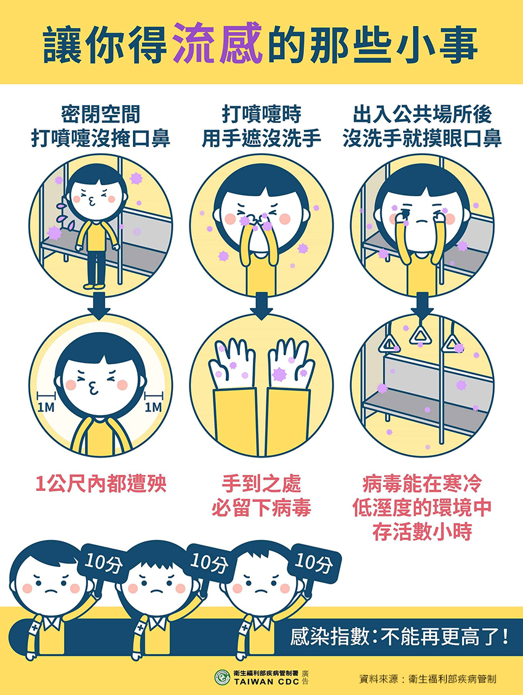

月號－健康大小事
月號－健康大小事流感是一種常見但不可忽視的季節性疾病，每年影響全球數百萬人。由於流感病毒變異迅速且具有高度傳染性，目前國內正處於流行期，且近期流感併發重症病例呈上升趨勢。因此，認識流感並了解其預防與治療方式，對於維護個人及社會健康至關重要，幫助您更妥善應對流感季節。 |
| 一、 流感跟感冒症狀這麼像，我要怎麼區別呢？ |
| 二、 流感傳染力強！6大風險因子要注意 |
流感傳染性很強，當患者咳嗽、打噴嚏或說話時，病毒就會隨著口沫在空氣中散播，因此很容易透過接觸傳染，下為6大常見風險因子 |
|  |
| 三、 流感高風險族群 |
流感可能發生在任何人身上，但有些人感染流感後容易引起併發症(如肺炎、腦炎、心肌炎及其他嚴重之繼發性感染或神經症狀等)，所以更需要提高警覺！ |
| 四、 如何預防流感 |
流感主要是透過感染者咳嗽或打噴嚏所產生的飛沫傳播，將病毒傳播給周圍的人，尤其在密閉空間，因空氣不流通，更容易造成病毒傳播，因此要從日常生活中做好預防措施！ 流感是一種常見但不可忽視的疾病，透過接種疫苗、良好衛生習慣及健康生活方式可以有效預防。若不慎感染，應及時就醫並做好自我隔離，避免進一步傳播。讓我們攜手建立健康的生活環境，共同降低流感帶來的威脅！ |
| 資料來源 1.開工啦！開工防疫大作戰，疾病管制署，1922防疫達人 2.流感症狀與感冒差異？會自己好嗎？流感疫苗接種、快篩解說 3.流感疫苗問答集 |